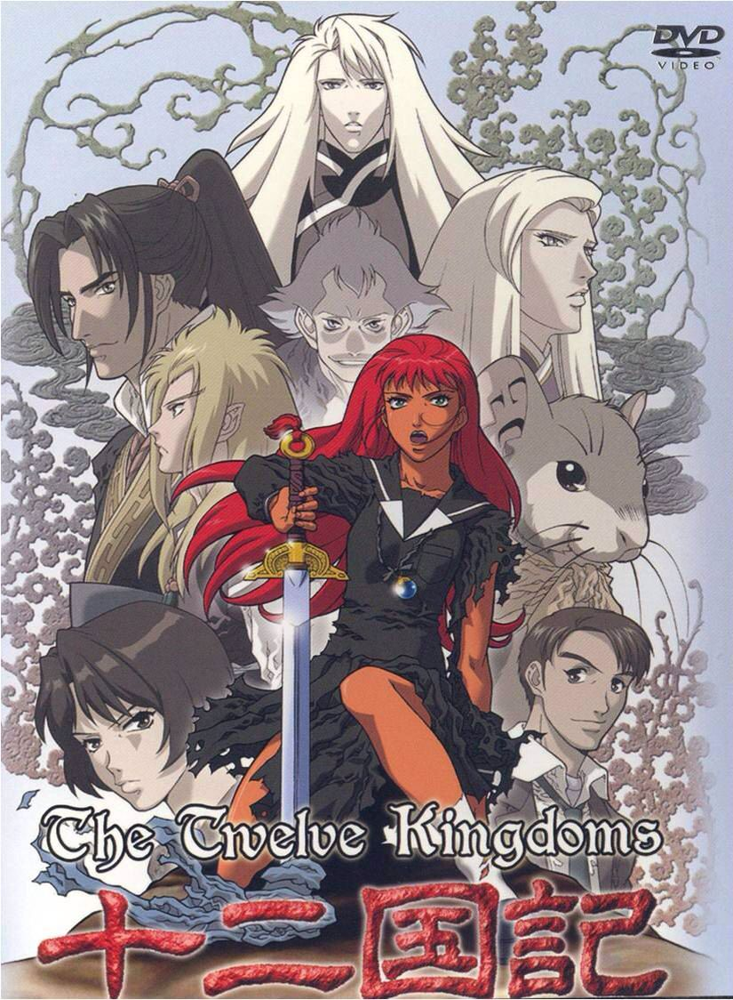

Juuni Kokuki

Juuni Kokuki, também conhecido como The Twelve Kingdoms, é uma série de anime e light novel que se destaca por sua rica construção de mundo e narrativa envolvente. Criada por Fuyumi Ono, a obra foi inicialmente publicada como uma série de romances em 1991 e, posteriormente, adaptada para anime em 2002. A história se passa em um universo paralelo, onde doze reinos coexistem, cada um governado por um rei ou rainha que possui um vínculo especial com um animal espiritual. A protagonista, Yoko Nakajima, é uma estudante do ensino médio que é transportada para esse mundo, onde descobre seu verdadeiro potencial e enfrenta desafios que a farão crescer e amadurecer.
A série é notável por sua abordagem profunda de temas como identidade, responsabilidade e o conceito de liderança. Ao longo de sua jornada, Yoko encontra diversos personagens que a ajudam a entender as complexidades do mundo em que se encontra. A narrativa é rica em detalhes, explorando não apenas as aventuras de Yoko, mas também as histórias de outros personagens que habitam os reinos, cada um com suas próprias lutas e motivações. Este aspecto multifacetado da narrativa é um dos principais atrativos de Juuni Kokuki, tornando-o uma obra que ressoa com muitos fãs de anime e literatura fantástica. O anime Juuni Kokuki foi produzido pelo estúdio Pierrot e dirigido por Asako Nishida. A série conta com uma trilha sonora marcante composta por Takayuki Hattori, que complementa perfeitamente a atmosfera épica e emocional da história. A animação é de alta qualidade, com cenários deslumbrantes que retratam a diversidade dos doze reinos, desde florestas exuberantes até desertos áridos. A série foi bem recebida tanto pela crítica quanto pelo público, sendo elogiada por sua narrativa envolvente e pela profundidade de seus personagens. A adaptação para anime consistiu em 45 episódios, divididos em duas temporadas, e abrange os primeiros volumes da série de light novels. Os doze reinos que compõem o mundo de Juuni Kokuki são variados e ricos em cultura, cada um apresentando suas próprias tradições, governantes e desafios. Entre eles, destacam-se o Reino de Kei, onde Yoko se encontra, e o Reino de En, conhecido por sua forte conexão com a magia. Cada reino é habitado por diferentes espécies e criaturas, que enriquecem ainda mais a narrativa. A interação entre os reinos e a política que os envolve são elementos centrais da trama, levando os personagens a confrontos e alianças que moldam o destino de todos. A complexidade das relações entre os reinos é um dos pontos que tornam a história tão intrigante e cativante. Assista